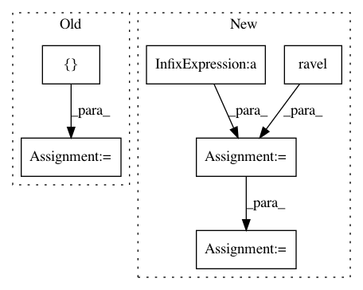

3676970a96bd66646b4cf40991e319e34154bc97,rastervision/evaluation/semantic_segmentation_evaluation.py,SemanticSegmentationEvaluation,compute,#SemanticSegmentationEvaluation#Any#Any#,72
Before Change
gt_arr = gt_labels.get_label_arr(window)
pred_arr = pred_labels.get_label_arr(window)
eval_items = []
for class_id in self.class_map.get_keys():
if class_id > 0:
eval_item = get_class_eval_item(gt_arr, pred_arr, class_id,
self.class_map)
After Change
self.clear()
labels = np.arange(len(self.class_map) + 1)
conf_mat = np.zeros((len(self.class_map) + 1, ) * 2)
for window in pred_labels.get_windows():
log.debug("Evaluating window: {}".format(window))
gt_arr = gt_labels.get_label_arr(window).ravel()
pred_arr = pred_labels.get_label_arr(window).ravel()
conf_mat += confusion_matrix(gt_arr, pred_arr, labels=labels)
for class_id in self.class_map.get_keys():
if class_id > 0:
self.class_to_eval_item[class_id] = get_class_eval_item(
conf_mat, class_id, self.class_map)
self.compute_avg()
def compute_vector(self, gt, pred, mode, class_id):
Compute evaluation over vector predictions.
In pattern: SUPERPATTERN
Frequency: 3
Non-data size: 6
Instances
Project Name: azavea/raster-vision
Commit Name: 3676970a96bd66646b4cf40991e319e34154bc97
Time: 2019-05-29
Author: lewfish@gmail.com
File Name: rastervision/evaluation/semantic_segmentation_evaluation.py
Class Name: SemanticSegmentationEvaluation
Method Name: compute
Project Name: brian-team/brian2
Commit Name: 0ac2bf1c2cafee4cc9555c9f09a17143b05b1a88
Time: 2014-03-06
Author: dan.goodman@ens.fr
File Name: brian2/synapses/spikequeue.py
Class Name: SpikeQueue
Method Name: prepare
Project Name: nilearn/nilearn
Commit Name: 38b1a68f9f74ebb1a0f8cf2f73a9e606f7c022c2
Time: 2015-07-28
Author: elvis.dohmatob@inria.fr
File Name: nilearn/decoding/tests/test_same_api.py
Class Name:
Method Name: test_smoothlasso_and_tv_same_for_pure_l1_another_test